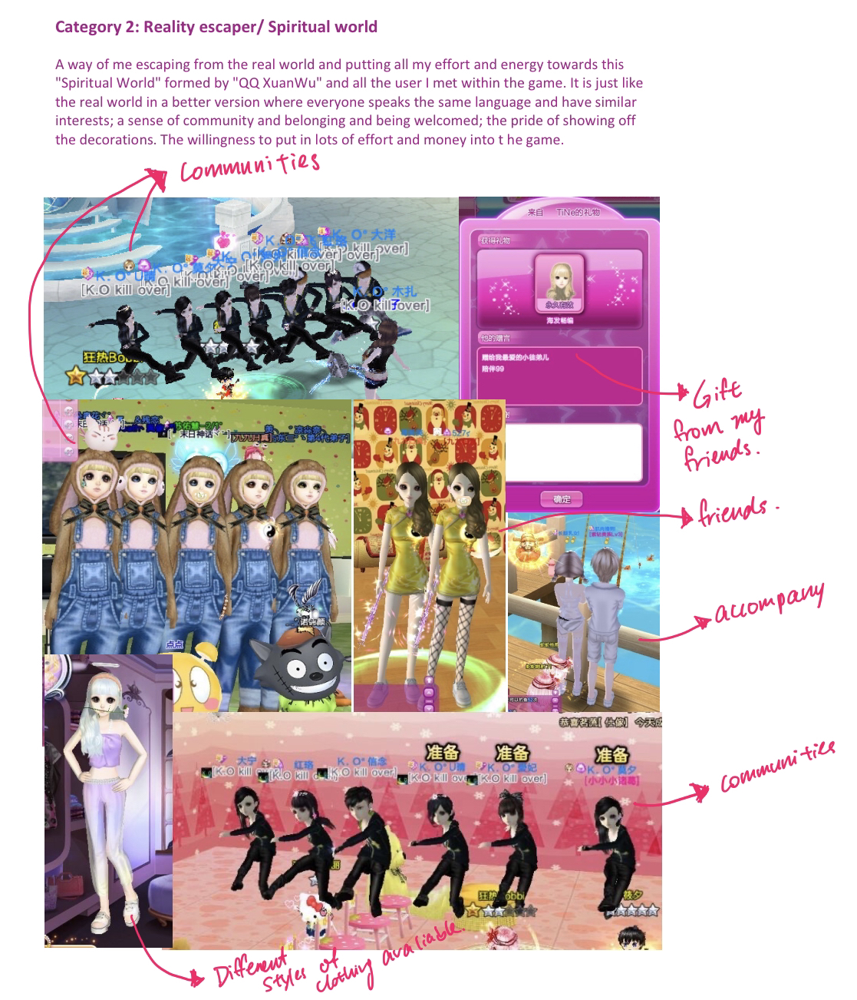

Inspiratioin
-
One of my initial inspiration was this game that I used to play called "QQDance" during my Juinor High School. It was a way of escaping the reality of me being in a environment with language bounderies.

-
The second inspiration was this chatroom called "QQChatRoom," where people would put on different outfits and join rooms that they want and chat with people they know or people they do not know.

The idea that I have for my avatars was to create an environment where they could communicate freely without any worry of different languages.
Process
The initial ideas of forming the avatars and their personalities.
Original Concept
The initial concept was to create a chat surface for two users who spoke different languages. Where they could get the translation of each other's texts and communicate with each other with out language bounderies.

The first prototype of the chatroom surface for two avatar.

Conclusion/Reflection
For the final result of the prototype I am gratified with the concept of the chatroom where there could be alot of interactivities between the avatars/users happening at the same time. The difficulties was the failiar of the displaying of the outcome of the form for hover over multiple text bubbles and the immediate display response of the scene in short terms of time. If I were to have a chance to recreate the prototype, I would choose to create a real website prototype instead of using figma for prototype and record the result. The prototype that were being created within the figma are definetly showing my outcome of this project, but in a not enough expressive way.